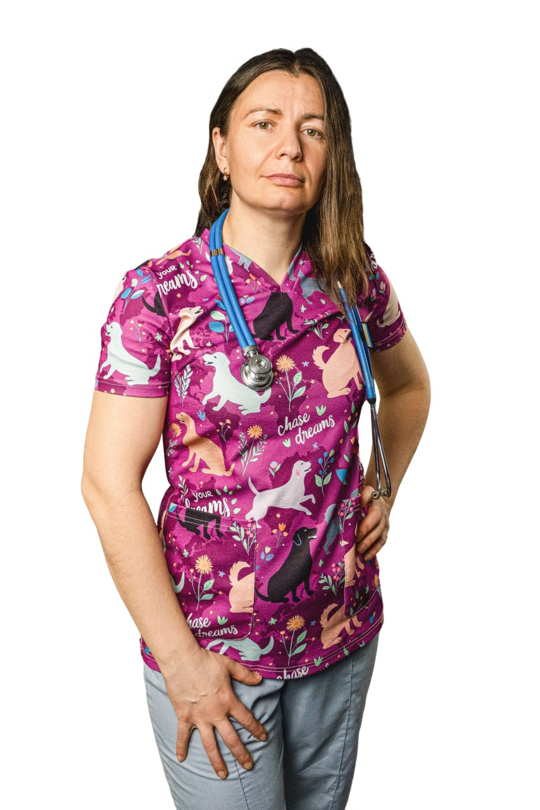
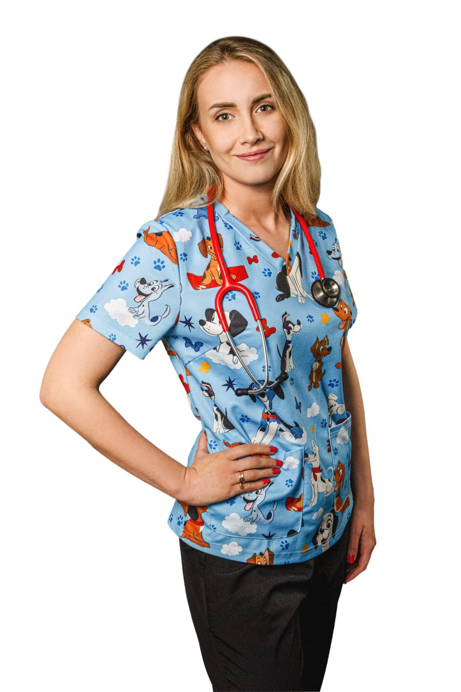

Profesionalus veterinarijos gydytojo patarimas paprastu telefono skambučiu. Greitas atsakymas į jums rūpimus klausimus neišeinant iš namų.
1. Žemiau pasirinkite gydytoją ir atlikite saugų 20 € apmokėjimą paspaudę mygtuką.
2. Po sėkmingo apmokėjimo, mes su jumis susisieksime ir suderinsime patogų laiką.
3. Konsultacija vyksta paprastu telefono skambučiu.
4. Jei prireiks geriau įvertinti situaciją, gydytojas pokalbio metu paprašys jūsų atsiųsti geros kokybės gyvūno nuotraukas ar turimus tyrimų rezultatus (pvz., per „Telegram“).

Vidaus ligų terapija, oftalmologija, reprodukcija. Išsamus atvejo aptarimas ir rekomendacijos telefonu.

Kardiologija, dermatologija, vidaus ligos. Atsakymai į klausimus ir tolesnio gydymo plano aptarimas.
* Jei konsultacija trunka ilgiau nei 30 minučių, taikomas papildomas mokestis.
Iki 15 min. trukmės pokalbis bendriems klausimams: vizito laiko derinimas, paslaugų kainos, pasiruošimas tyrimams. Svarbu: tai nėra medicininė konsultacija ir diagnozės telefonu nenustatomos.